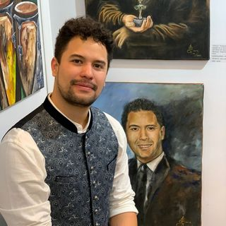
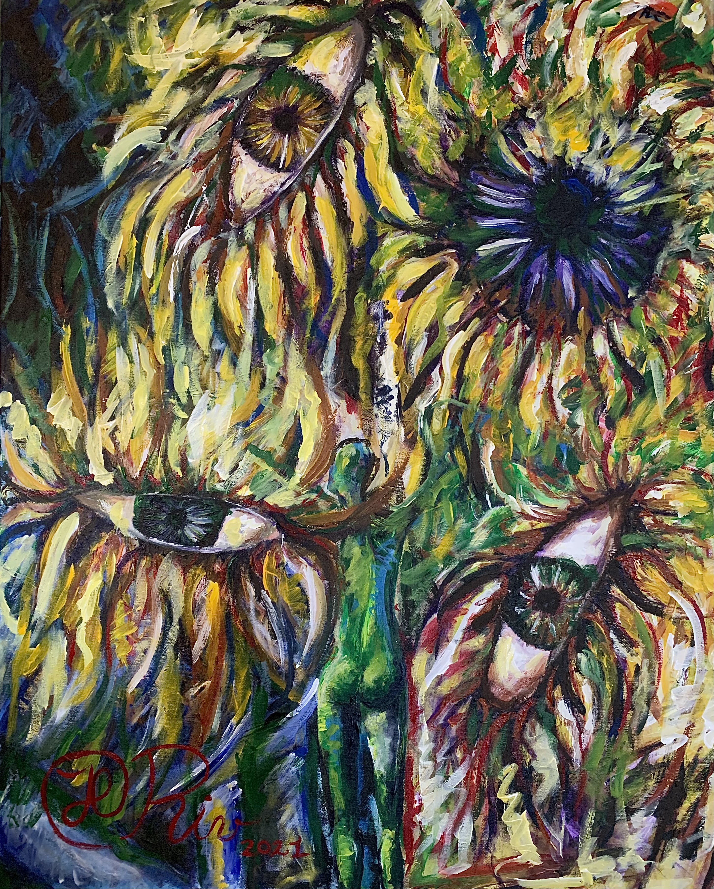
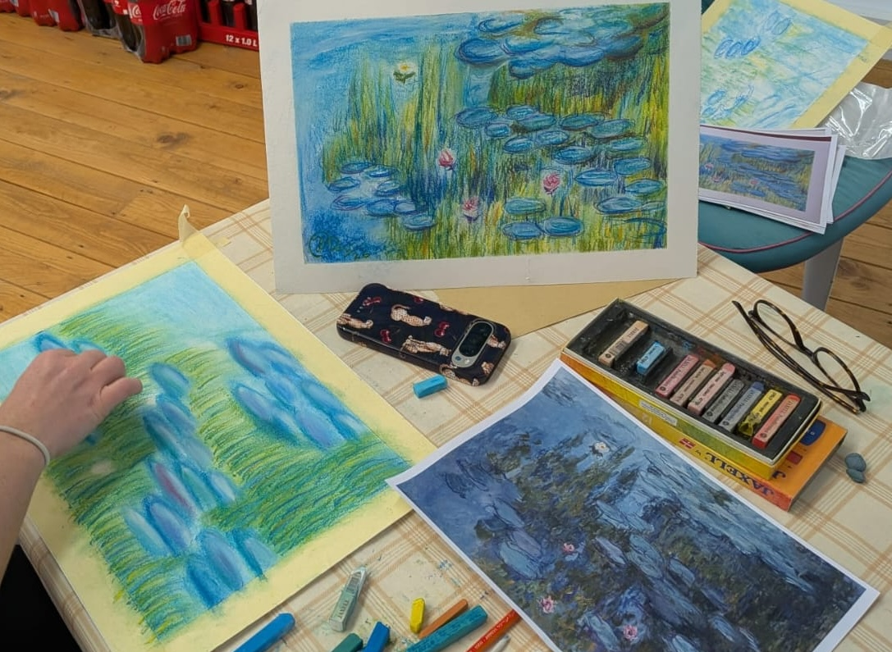

Juan Carlos Rivera Cuadros
Painter from Cali, Colombia — M.Sc. Process Engineering
My work spans cubist, abstract, and surrealist styles — combining intellectual ideas with rich color harmonies and texture. I have exhibited across Germany, Belgium, and Monaco, including at the Venezuelan Embassy in Frankfurt. My series Precolombino, inspired by pre-Hispanic Latin American cultures, was selected for exhibition at the Carrousel du Louvre in Paris.

Series

Dreams
My first series, exploring expressionist techniques and dream-like narratives through mixed media.
View series →
Pre-Columbian
Drawings inspired by ancestral artifacts from Colombian museums — a bridge between past and present.
View series →Painting Courses
Water Lilies: A Pastel Chalk Workshop
Master soft pastels to recreate the signature light and atmosphere of Impressionist masterpieces. Layer vibrant colors, navigate tonal values, and capture the essence of Impressionism.
View courses →